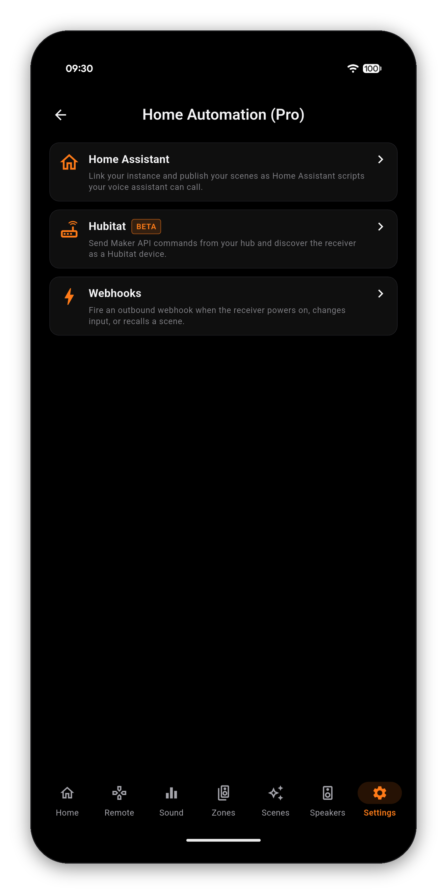
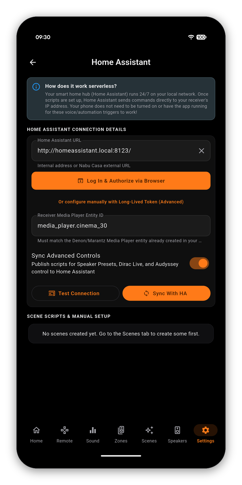
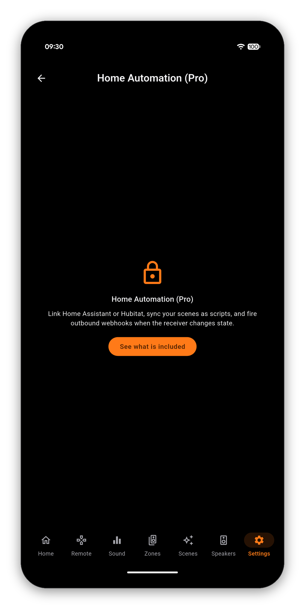
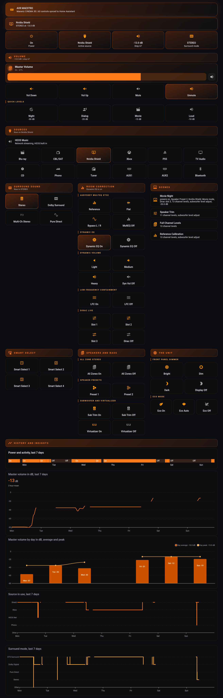
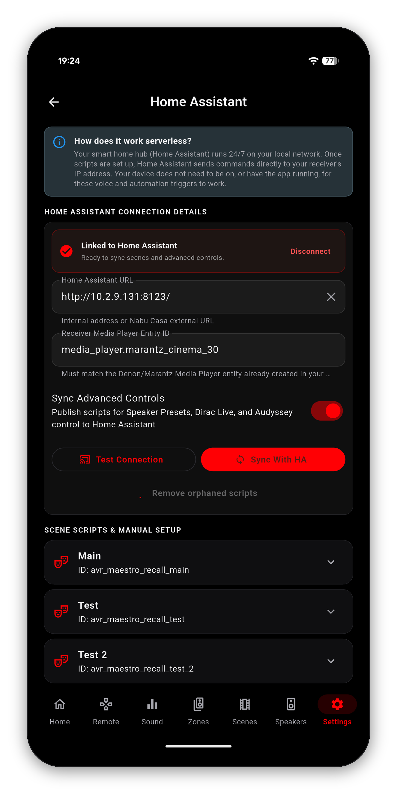
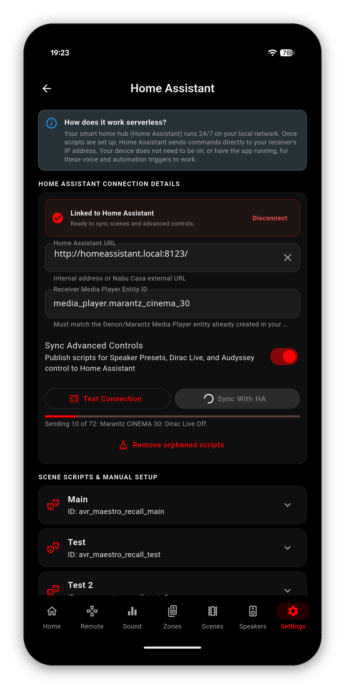
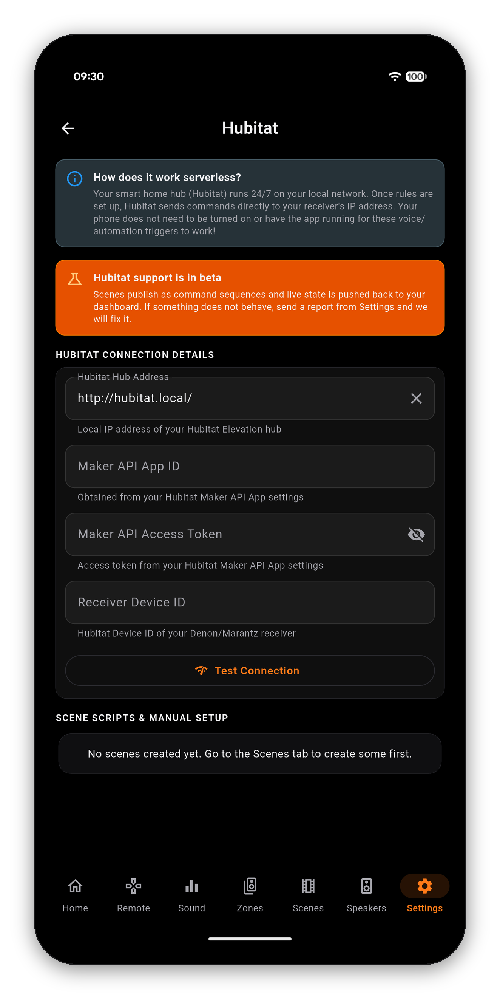
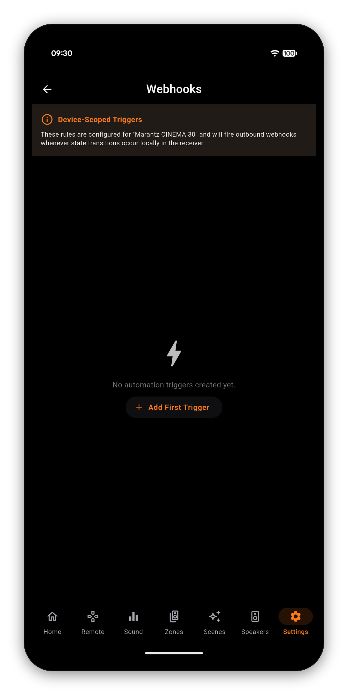
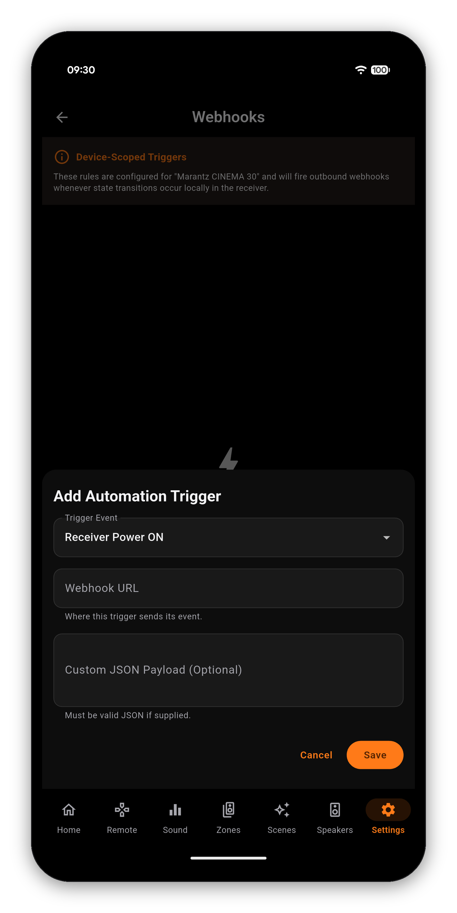

Link AVR Maestro to Home Assistant or Hubitat and every scene you have built becomes a native script on your hub. From then on the hub talks to the receiver directly, on your own network - so "Alexa, movie night" works with your phone off, asleep, or in another country.



Most integrations make your phone the middleman: the phone hears the command, the phone sends it, and the automation only works while the phone is awake and on the network.
AVR Maestro does not do that. It compiles your scenes into scripts that live on your hub, and the hub sends the commands to your receiver's local IP. The app's job ends when the sync finishes.
http://192.168.1.150:8123, or your external Nabu Casa URL.Home Assistant now has a control for everything your receiver can be told to do, and no opinion at all about how to arrange them. The dashboard example is one arrangement with the full YAML: source and surround tiles that light up when they are the live one, volume in real dB, your Scenes reading their own names, and an honest map of what Home Assistant can and cannot see.

Turn on Sync Advanced Controls and the app publishes a script for far more than your scenes: every Speaker Preset, every Dirac Live filter slot, each Audyssey curve. A full sync on a Cinema 30 lands over seventy scripts, so a dashboard button or a voice command can load a Dirac filter or switch the room curve the same way it recalls a scene.

A script can be run but never read, so early dashboards could switch the Audyssey curve or the Dirac slot with no way to show which one was on. The readings the app already holds - the live surround mode, the active Dirac filter, the speaker preset, the dimmer and dozens more - now publish as attributes on the receiver's status sensor, so a tile can light up for the setting that is actually running.

In the Home Assistant section, Export Sound Modes (REST) opens Advanced Script (REST): one Home Assistant script for each sound mode your receiver lists, so a dashboard button or an automation can pick a surround mode directly. The app reads that list from the receiver, so turn the receiver on and open the Sound tab once first; until then it asks you to, rather than exporting an empty list.
Power, volume and mute for Zone 2 and Zone 3 publish as their own scripts, so a patio or a second room answers a dashboard or a voice assistant the way the main zone always has. Only the zones your receiver actually reports get buttons, so a two-zone receiver never grows a Zone 3.
Scripts used to be named after the scene and the receiver, so renaming either one left the old script behind and quietly created a second. They are now named after the scene and the receiver's MAC address, which is what makes a rename update the same script instead of forking it.
The first sync after that change replaces the old scripts with the new ones. Anything you built on the old IDs needs repointing once - a dashboard button, an automation, a voice alias. Open the script in Home Assistant to find its new entity ID.
Entities now read from the receiver too - cinema30 rather than thirty-two characters of machine identifier - so the list is legible and autocomplete finds them. Ids from earlier versions keep working.
Hubitat is supported through its Maker API, and is marked BETA in the app because it is newer than the Home Assistant route, not because it is unfinished.
Enable Maker API on the hub first (Apps › Add Built-In App › Maker API) and it hands you all three. Paste them in and AVR Maestro discovers your receiver, publishes your scenes as command sequences, and pushes live state back so a Hubitat dashboard reflects what the receiver is actually doing rather than what it was last told.

Home Assistant and Hubitat send commands to the receiver. Webhooks go the other way: when the receiver does something, tell anything else about it. Turn the receiver on and AVR Maestro posts a small message to an address you choose - that message is the webhook.


| Trigger Event | Fires when | Can be narrowed to |
|---|---|---|
| Receiver Power ON | The receiver comes out of standby | - |
| Receiver Power OFF | The receiver goes into standby | - |
| Active Input Changed | The selected source changes | One input, under Only trigger for input source |
| Scene Recalled | A Scene is applied | One scene, under Select Scene |
Narrowing is what makes them useful rather than noisy. "Active Input Changed" on every input is a firehose; the same trigger pinned to the one input your projector sits on is a light switch.
The input list is the one your own receiver reports, so it already reflects any source you have renamed or hidden. The scene list is your own scenes.
This is the Home Assistant route, which is the one most people want. Do the Home Assistant half first - the app needs something to point at.
avr-power-on, avr-movie-night. Any name works as long as it is unique on your Home Assistant. Write it down; you type the same one into AVR Maestro.Sends to http://your-ha:8123/api/webhook/avr-power-on - so you can check it before you save.Switch Where to send it to Other and paste a full URL into Webhook URL. Anything that accepts a POST works - a Node-RED flow, an IFTTT applet, a script on a NAS, a Hubitat Maker API endpoint. That route stores the address exactly as you typed it, so if the destination moves you edit the trigger.
A small JSON body. The What it sends card on the same screen says it in plain language for the trigger you picked, so you never have to guess - and these are the field names your automation reads:
| Trigger | Fields in the message |
|---|---|
| Receiver Power ON / OFF | event, timestamp |
| Active Input Changed | ...plus source |
| Scene Recalled | ...plus sceneId and sceneName |
In a Home Assistant automation those arrive as {{ trigger.json.event }}, {{ trigger.json.source }} and so on. You can read them, or ignore them completely and just act on the fact that it fired. Most people do the second.
If you need a different shape - a service that expects its own format - open Send my own JSON instead under that card and write it there. It is folded away and marked Advanced because almost nobody needs it, not because it is discouraged.
In the order worth checking, because the first two are almost always it:
Home Automation (Pro) - Home Assistant, Hubitat and outbound webhooks - is a one-time unlock. Everything else in AVR Maestro, including the on-device AI assistant, is included in the app.
Already bought it, on this device or another one with the same store account? Tap Restore Purchases under the unlock button.
Voice control reaches your receiver through Home Automation, by way of your hub. AVR Maestro does not run its own voice recognition.
Getting started · Manage receivers · Navigating the app · Search · Home Screen · Volume Controls · Remote · Zones · Now Playing & HEOS · Radio (FM/AM) · Scenes · Sound · Graphic EQ · Speakers · Why a control is locked · Settings · Widgets · Custom Icons · On-Screen Display · Languages · The Assistant · Home Assistant dashboard · Backup & Restore · Glossary
Home Automation is a one-time unlock. Everything else in the app, including the AI assistant, is included.